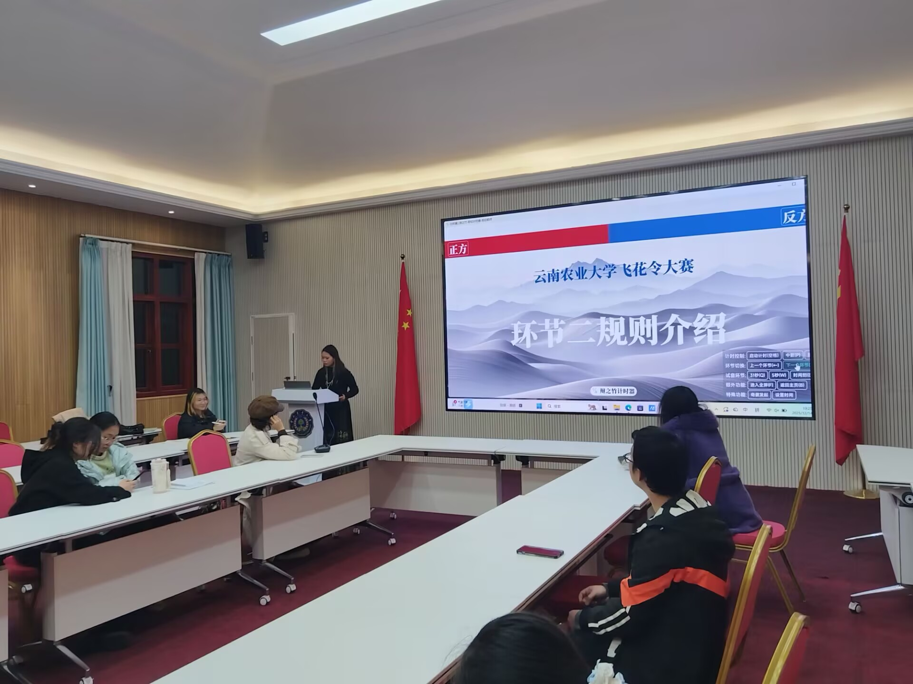
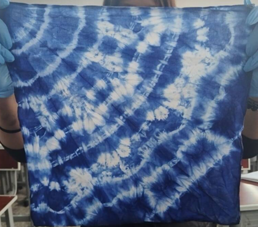

宣传部
负责社团宣传文案、海报制作，记录活动影像，运营宣传平台，对外展示社团风采、扩大社团影响力。
宣传 · 影像

本社团成立于校园传统文化传播发展的热潮之下，旨在打破青年与传统国风文化的隔阂，传承中华传统服饰文化与礼仪文化，至今已积累数年发展历程，是校园国风文化传播的核心学生社团。
社团以“着汉家衣裳，承华夏文脉”为宗旨，立足校园、面向青年，深耕传统文化普及与实践传播。社团定位于传统文化实践型社团，聚焦汉服文化、传统礼仪、古典雅艺的传承与推广，长期开展汉服形制科普、传统妆容发型教学、古典舞蹈、传统节日雅集、国风巡游、汉服摄影展等多样化活动。
近年来，社团围绕传统文化校园传播不断推进品牌建设，形成了“理论科普+实践体验+文化展示”的特色活动模式。目前社团成员规模稳定，汇聚了一众热爱国风、心怀传统文化的在校学子。社团以培养学生文化自信、审美素养与传统文化传播能力为目标，丰富同学们的课余文化生活。未来，社团将持续深耕国风文化，创新活动形式，让更多青年了解汉服文化，传承弘扬优秀中华传统文化。
负责社团宣传文案、海报制作，记录活动影像，运营宣传平台，对外展示社团风采、扩大社团影响力。
负责社团经费收支、预算统计、物资采购与账目管理，规范财务流程，保障社团活动有序开展。
负责社团各类活动的主题构思、方案撰写与流程设计，统筹活动整体规划，提供完整活动预案。
负责活动现场布置、人员调度与秩序维护，落实活动细节，保障各项活动顺利落地执行。
本次耕读文化节开幕式由惊婳国风古韵社、礼仪社联合带来汉服走秀。社员身着各式传统华服缓步登台，衣袂流转尽显古典风雅。活动将耕读底蕴与非遗国风相融，以服饰展演传承传统礼仪，让青年学子沉浸式感受中华衣冠之美。
惊婳国风古韵社于黑龙潭开展国风游园活动。社员身着汉服漫步古园。活动以园林实景衬传统衣冠，融山水古韵与汉服美学，沉浸式传递古典风雅，让同学们近距离感受传统服饰与中式园林相融的独特魅力。

2025 年 12 月惊婳国风古韵社联合晨曦文学社举办诗词飞花令大会。面向全体报名参与者开展诗词比拼，以经典飞花令为主要竞技形式。活动融古韵雅趣与文字争锋，兼具国风氛围与文学较量，诗友同台切磋，共赏千年诗词之美。

2026 年 4 月惊婳国风古韵社举办的本次扎染活动，以折叠捆扎手法晕染素布肌理，在实操中还原传统染织技艺。活动将国风形制与草木染色融合，以手作留存独有的非遗古韵印记。
由惊婳国风古韵社主办的漆扇活动。活动面向报名社员开展非遗漆扇手作体验，众人以水为媒、以漆绘扇，完成各具意境的团扇。沉浸式领略古法漂漆技艺，自然形成的纹样各不相同，在亲手创作之中品味雅致东方古韵。